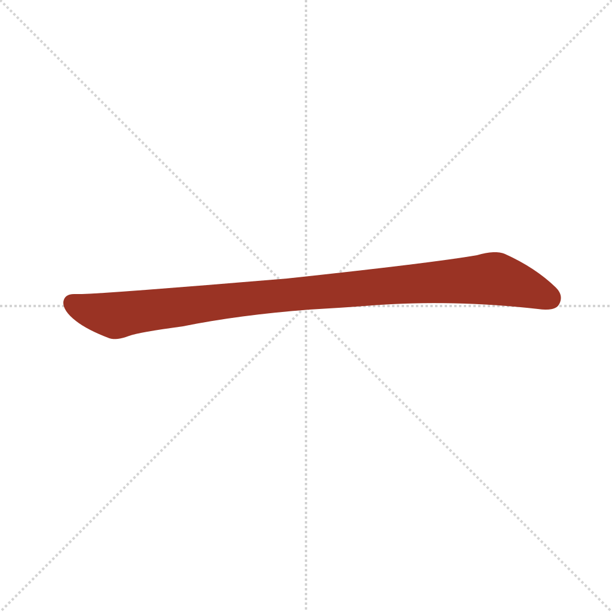
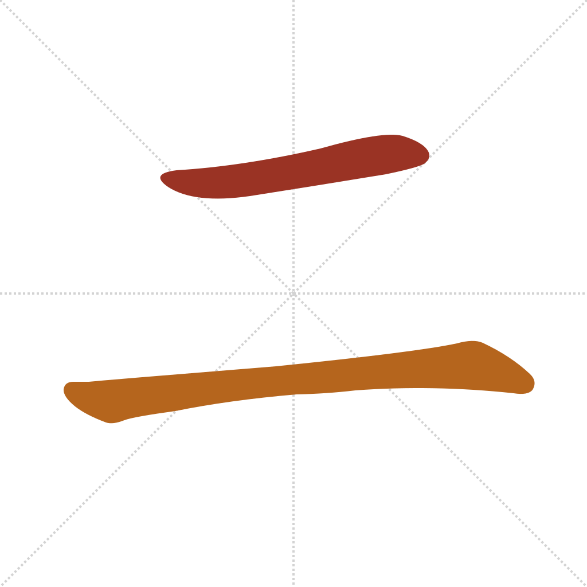
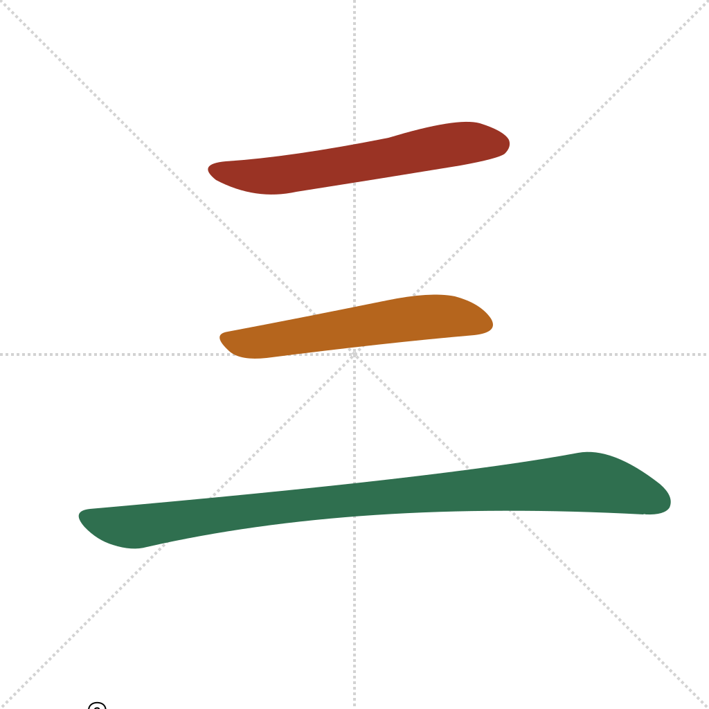
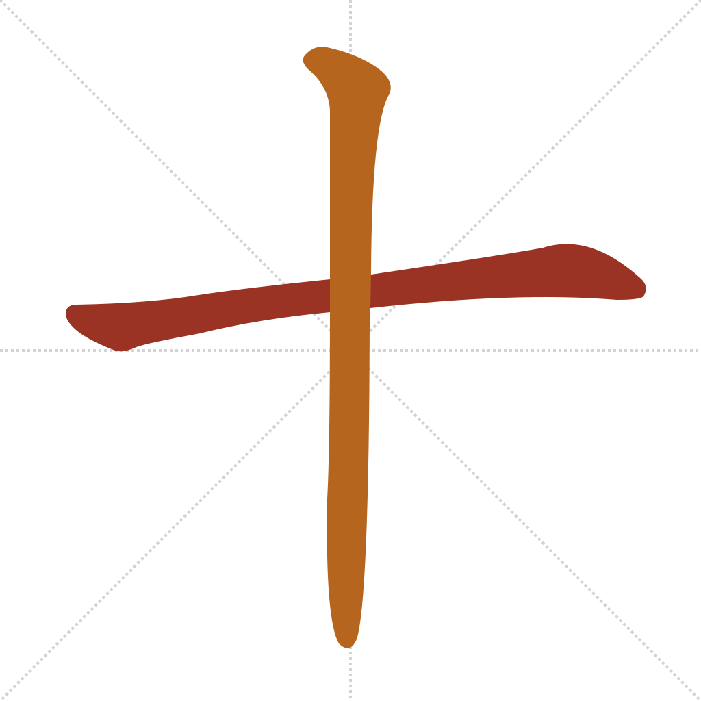

Lesson 5 · Foundational Components
Numbers are some of the highest-frequency characters in the language, and three of today's four are about as simple as Chinese gets: 一, 二, and 三 are literally tally marks — one, two, and three stacked horizontal strokes. The fourth, 十 ("ten"), is the more valuable one: once you have it, you can read and form every number from 10 to 99 by combining digits you already know, without learning a single new character for any of them.
Quick recall — click each card to flip it:
Wiktionary records two competing theories for 十's origin, and you don't need to pick one to use the character: it may originally have depicted a needle (针, later borrowed purely for its sound to mean "ten"), or a knotted cord used for counting or tallying. What's clearer is the shape's evolution: oracle-bone forms of 十 are mostly a single vertical stroke — sometimes with a small dot partway down — and only later did a horizontal stroke get added, producing the cross shape you write today. (Wiktionary: 十)
一, 二, and 三 are as simple as stroke order gets — each is just that many horizontal strokes, drawn top to bottom. 十 follows the same horizontal-before-vertical rule you already know from 木 in Lesson 1:




You've now seen components fuse into a new character (好 = 女+子), characters sit side by side as a word (出口 = 出+口), and now a third pattern: characters combining by arithmetic. The position relative to 十 changes the operation:
十 + 一 → 十一 shí yī — 11 (ten, plus one — digit after 十 adds)
二 + 十 → 二十 èr shí — 20 (two, times ten — digit before 十 multiplies)
二十 + 三 → 二十三 èr shí sān — 23
That last one combines both rules at once: 二十三 is literally "two-ten-three," i.e. (2×10)+3. Once a future lesson fills in 四 through 九, this same logic reads any number up to 99 — nothing new to memorize, just 十 plus arithmetic you already do.
Which character means "ten"?
How many strokes is 三?
二十三 (二 + 十 + 三) represents the number:
In 二十 (two-ten), the digit before 十 acts to:
For the full etymology of any character above, see the Wiktionary entry linked, or the Outlier Dictionary of Chinese Characters for the rigorous version.
Out in the world: 十 and combinations like 二十/三十 turn up on price tags, receipts, dates, and platform/gate numbers anywhere characters are used instead of Arabic numerals — and you can already read prices like 十三 (13) or 二十一 (21) cold.